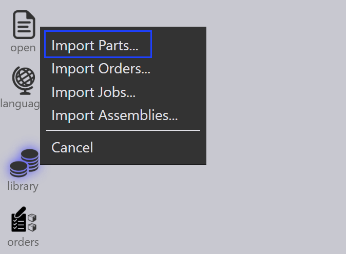

Alkatrészek importálása
Az alkatrészek importálása előtt győződjön meg arról, hogy a fájlformátumok kompatibilisek az TruSmartCAM rendszerrel. További részletekért lásd: támogatott fájlformátumok.
| Ha az anyag és vastagság nincs hozzárendelve az alkatrészhez az importálás után, rendelje hozzá az anyagot az alkatrész panel használatával. |
Importálási módszerek
Három módszer létezik az alkatrészek importálására az Alkatrész Könyvtárba:
-
Importálás fájlból
-
Húzás és elhelyezés
-
Figyelő mappa
Importálás fájlból
Egy 2D vagy 3D alkatrész fájl importálható az Alkatrész Könyvtárba a Alkatrészek importálása opció használatával.
-
Kattintson az megnyitás ikonra a parancssávban és válassza a Alkatrészek importálása opciót.

-
Megjelenik a Open párbeszédablak — válasszon ki bármely CAD fájlt (2D vagy 3D).
-
Megjelenik a kiválasztott CAD fájl előnézete.

-
Válassza ki a szükséges alkatrészt és kattintson az Open gombra.
-
A rendszer automatikusan szerszámozza az alkatrészt az összes elérhető géphez frissített szerszámozási állapottal.
Húzás és elhelyezés
-
Húzza és helyezze el az alkatrész fájlt közvetlenül az TruSmartCAM Alkatrész Könyvtárba.
Figyelő mappa
A figyelési beállítások lehetővé teszik egy mappa figyelését új fájlokért és azok automatikus importálását az Alkatrész Könyvtárba.
A konfiguráláshoz lásd: Watch settings oldal.
|

Importálási konfiguráció
Használjon geometriai összehasonlítást ugyanannál a CAD felülvizsgálatnál
Amikor egy alkatrészt ugyanazzal a CAD revízióval importál, az TruSmartCAM összehasonlíthatja a CAD fájl geometriáját a meglévő alkatrésszel.
-
Ennek engedélyezéséhez konfigurálja a Felülvizsgálati keresési gombok elemet (például REV) az gyár → beállítások →Importálás/exportálás menüpontban. Ezután engedélyezze a Használjon geometriai összehasonlítást ugyanannál a CAD felülvizsgálatnál opciót.

| A geometria összehasonlítás ugyanazon a CAD revízión csak akkor működik, amikor a Felülvizsgálati keresési gombok konfigurálva van. |
-
Most importáljon egy alkatrészt az alkatrész könyvtárba egy meghatározott revízióval (például Revision 1).

-
Ugyanazt az alkatrészt újra importáljuk ugyanazzal a revízióértékkel.
-
Az TruSmartCAM összehasonlítja az újonnan importált CAD fájl geometriáját a meglévő alkatrésszel.
-
Ha geometriai különbséget észlel, az TruSmartCAM egy kérdést jelenít meg, amely megkérdezi, hogy:
-
csere cserélje le a meglévő alkatrészt az új geometriával, megtartva ugyanazt a revízió értéket.
-
Kihagyás hagyja ki az importálást, megtartva a meglévő alkatrészt és annak geometriáját.

-
Ez lehetővé teszi a felhasználók számára az alkatrész geometriájának frissítését a revízióérték módosítása nélkül, miközben továbbra is fenntartják az ellenőrzést a meglévő alkatrészek cseréjével kapcsolatban.
Az importált alkatrészek automatikusan hozzáadódnak a könyvtárhoz további használatra. További információkért lásd: Library.